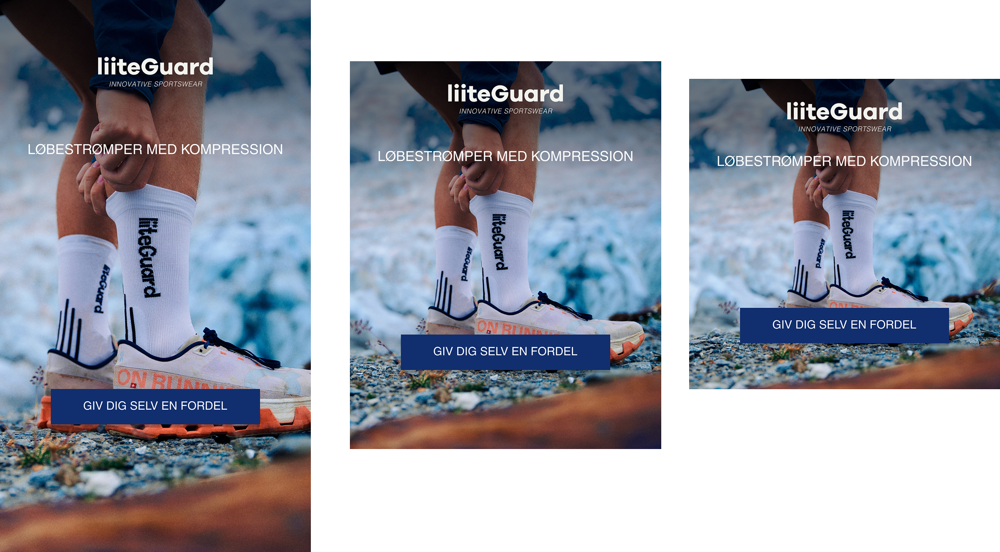
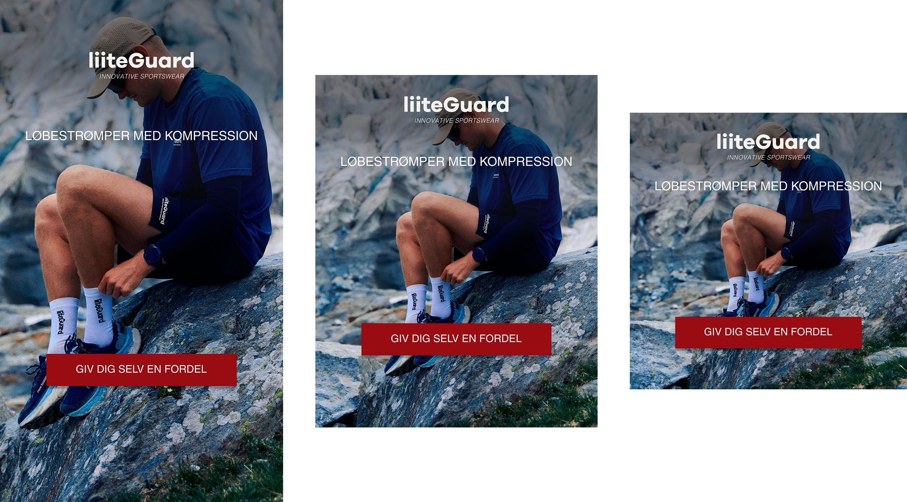

Værktøjer og programmer jeg har brugt i projektet:


Kampagner, UGC og influencermarketing - liiteGuard
Under min tid hos Liiteguard arbejdede jeg med en performance- og awareness kampagne for deres kompressionsstrømper, som blev distribueret på primært Instagram og Facebook gennem Meta Ads. Kampagnen bestod af en kombination af statiske ads, UGC-videoer og influencer content, der tilsammen skulle drive både engagement, brand awareness og konverteringer.
Jeg havde en central rolle i kampagneopsætningen, hvor jeg udviklede briefs til creators og influencers samt designede og producerede paid social assets i forskellige formater, herunder feed ads, stories og video content til Reels. Derudover stod jeg for copywriting og tilpasning af content, så budskaberne matchede kampagnens mål og liiteguards visuelle identitet.
En del af mit arbejde bestod i eksekvering og optimering i Meta Business Manager, hvor jeg stod for upload, strukturering af kampagneflows og løbende performanceoptimering baseret på KPI’er som reach, engagement og klikrate. Jeg arbejdede derfor både kreativt og datadrevet med fokus på at forbedre kampagnens effektivitet undervejs.
I forbindelse med influencer marketing koordinerede jeg både gifted og betalte samarbejder, hvor relevante creators modtog produkter og producerede autentisk content til deres egne platforme. Dette content blev efterfølgende også anvendt i paid ads som social proof og UGC creatives, hvilket styrkede kampagnens troværdighed og performance.
Gennem hele kampagnen arbejdede jeg med at kombinere kreativ contentproduktion, paid social strategi og performance marketing, hvor fokus var at skabe et stærkt og konverteringsorienteret kampagneflow på tværs af formater og kanaler.
Se et udvalg nedenfor
Værktøjer og programmer jeg har brugt i projektet:

